Day 4 of Training Workshop
Before we get started, let’s confirm your computer has nextstrain setup properly. Open a terminal and run the following command:
You should see the following output:
Checking setup…
✔ yes: operating system is supported
✔ yes: runtime data dir doesn't have spaces
✔ yes: runtime appears set up
✔ yes: snakemake is installed and runnable
✔ yes: augur is installed and runnable
✔ yes: auspice is installed and runnable
Setting default runtime to conda.
All good! Set up of conda complete.If you ran into an error when running the command, go to the following website.
Install the nextstrain-cli using the instructions for your operating system.
For the “Set up a Nextstrain runtime” section, follow the “Conda” instructions for your operating system. We’ll go around to help if you are running into issues.
Phylogenetics is the study of evolutionary relationships among organisms.
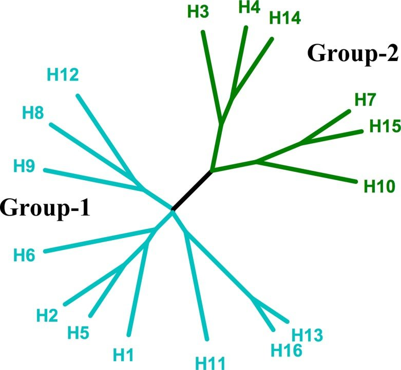
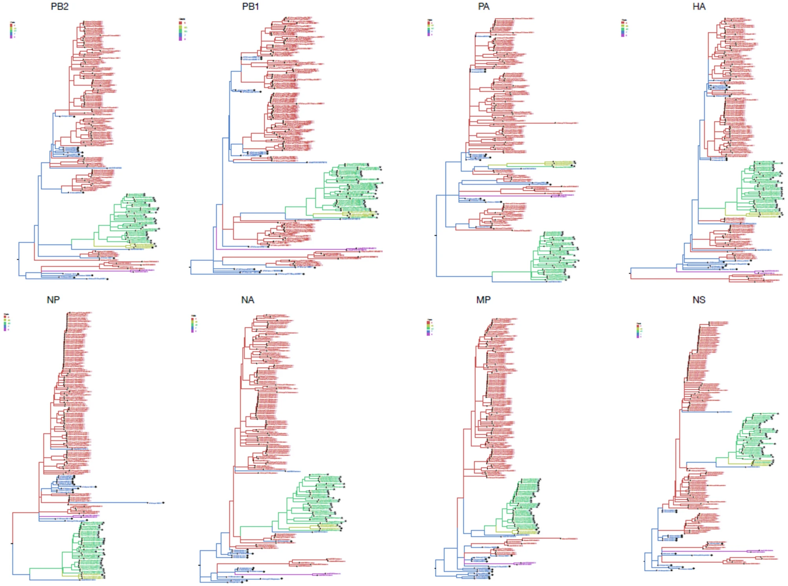
library(ape)
library(ggtree)
library(ggplot2)
library(dplyr)
`%notin%` <- Negate(`%in%`)
# Branch lengths are explicit so we can display them
tree_text <- "((A:1,B:0.5,(C:1.5,D:0.5):0.5):0.5,E:0.5);"
tree <- read.tree(text = tree_text)
tree <- ape::root(tree, "E")
# Basic ggtree base plot
base_plot <- ggtree(tree, branch.length = "branch.length") + theme_tree2()
tips_plot <- base_plot +
geom_tiplab(offset = 0.02) + # tip labels
geom_tippoint(size = 3, shape = 21, fill = "red", colour = "black") + # highlight tips
ggtitle("Tips highlighted")
tips_plot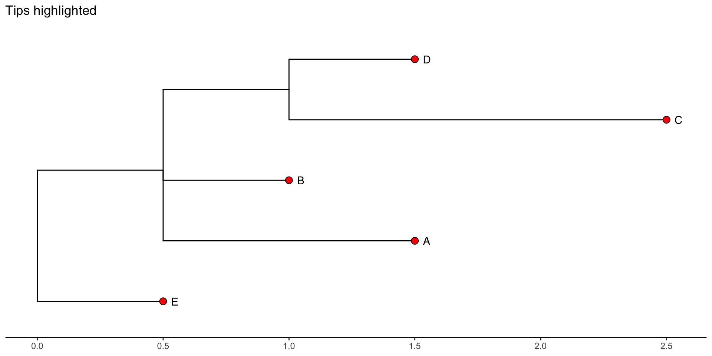
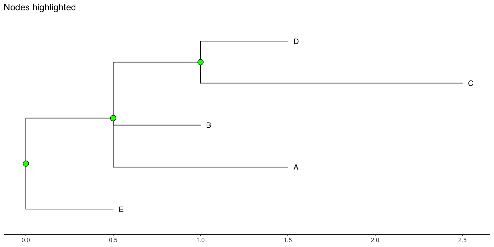
branches_plot <- base_plot +
geom_tiplab(offset = 0.02) +
# place branch-length labels along branches; use aes(label=branch.length)
# round to two decimals for display
geom_label(aes(x = branch, label = round(branch.length, 2)), color = "red") +
# emphasise branches visually by increasing line width (optional)
# geom_segment2(aes(subset = !isTip), size = 1.2) +
ggtitle("Branch lengths labeled (highlighted)")
branches_plot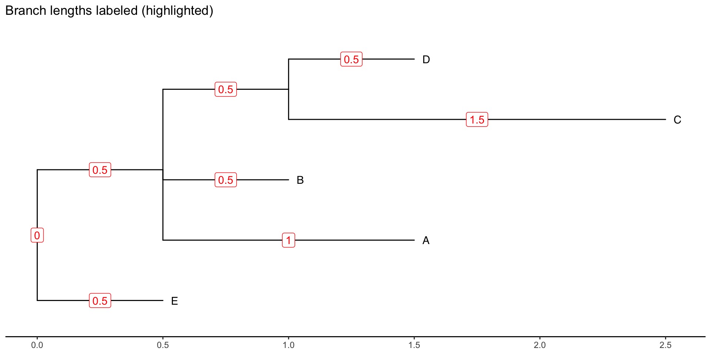
Ntip <- length(tree$tip.label)
root_node <- Ntip + 1
tree_df <- fortify(tree) %>%
mutate(branch_color = case_when(label == "E" ~ "purple",
.default = "black"))
root_plot <- ggtree(tree_df, aes(color=I(branch_color))) + theme_tree2() +
geom_tiplab(offset = 0.02) +
# mark the root with a star or large point
geom_point2(aes(subset = (node == !!root_node)), shape = 8, size = 5, colour = "purple") +
# optionally annotate "root" text
geom_text2(aes(subset = (node == !!root_node), label = "root"), hjust = -0.5, vjust = -1, size = 4, colour = "purple") +
geom_hilight(node=5, fill="purple", alpha=.6) +
geom_text2(aes(subset = (node == 5), label = "Outgroup"), hjust = -0.1, vjust = -2.0, size = 4, colour = "purple") +
ggtitle("Root and outgroup highlighted")
root_plot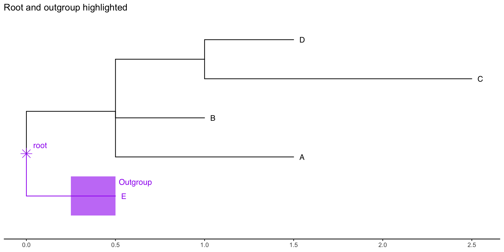
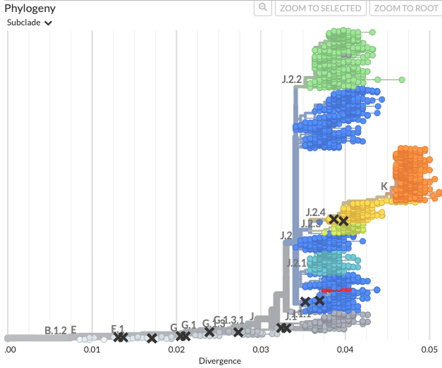
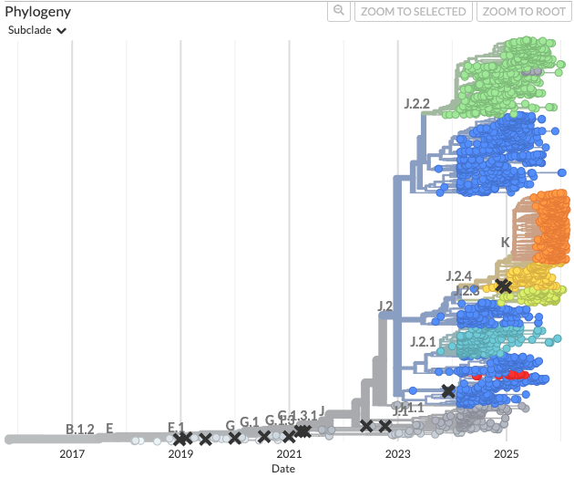
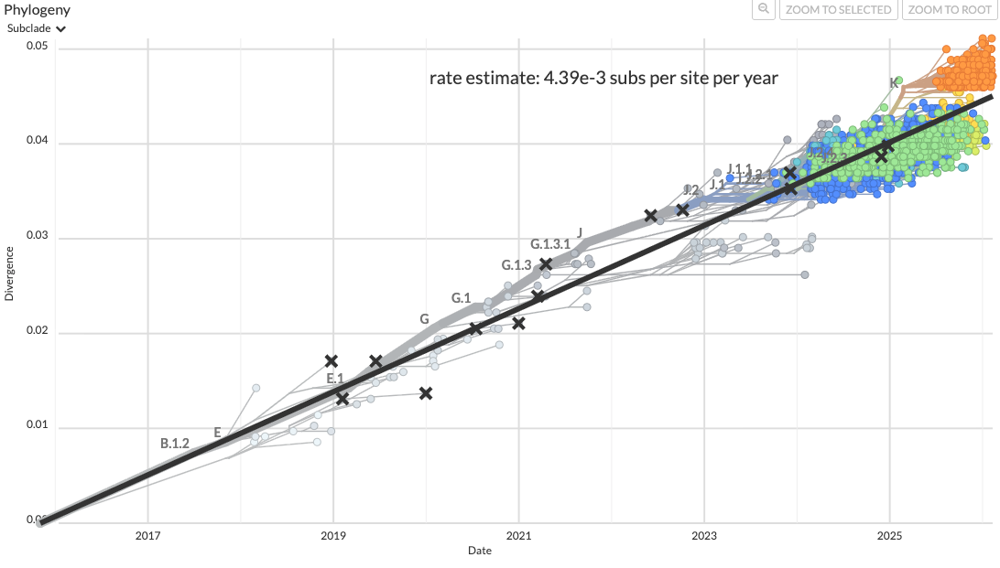
Clades are the fundamental grouping of phylogenetic trees. They are defined as a monophyletic group of taxa in a tree that includes a single common ancestor and all its descendants.
The seasonal flu research community recently implemented a nomenclature and clade proposal system for tracking important emerging clades. These correspond to the “subclade” designations from Nextclade outputs.
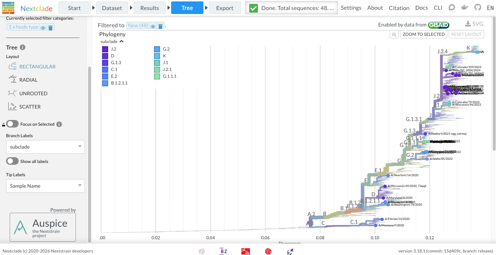
Defining a subclade in Nextstrain (augur clades command):
| clade | gene | site | alt |
|---|---|---|---|
| A | HA1 | 45 | N |
| A | HA1 | 48 | I |
| A | nuc | 473 | T |
| clade | gene | site | alt |
|---|---|---|---|
| K | clade | J.2.4 | |
| K | HA1 | 2 | N |
| K | HA1 | 144 | N |
| K | HA1 | 158 | D |
| K | HA1 | 160 | K |
| K | HA1 | 173 | R |
Subclade K example:
| clade | gene | site | alt |
|---|---|---|---|
| K | clade | J.2.4 | |
| K | HA1 | 2 | N |
| K | HA1 | 144 | N |
| K | HA1 | 158 | D |
| K | HA1 | 160 | K |
| K | HA1 | 173 | R |
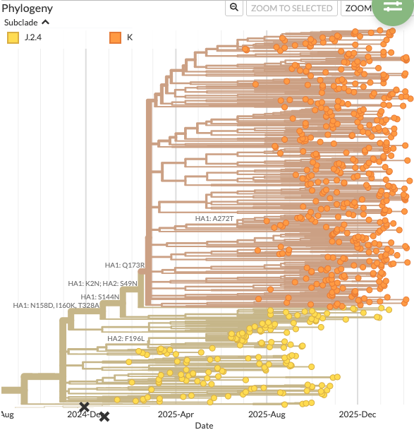
Quick break.
flowchart TD
A[Sequence selection and filtering]
B[Multiple sequence alignment]
C[Model selection]
D[Tree inference]
E[Tree evaluation and visualization]
A --> |The data that is <br/> included is **important**| B
B --> C
C --> |Also important for <br/> proper tree contruction| D
D --> E
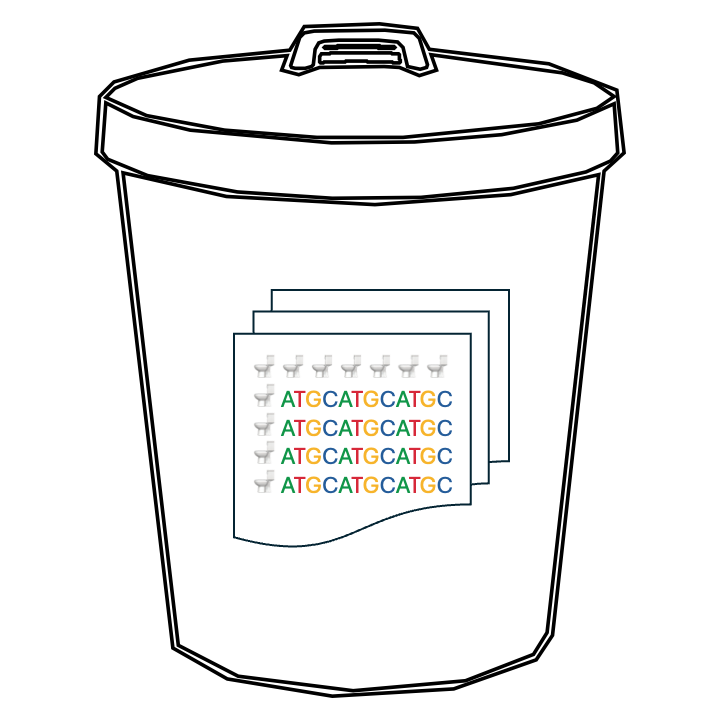
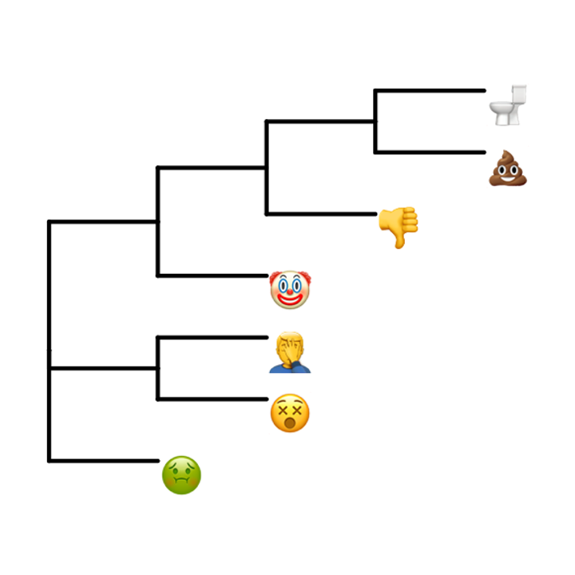
When starting the process of building a tree:
Consensus sequence data quality (not just NGS coverage)
What is the question you are trying to address?
Global surveillence?
Targeted regional analysis?
Country specific questions?
Timing of a newly emerged variant?
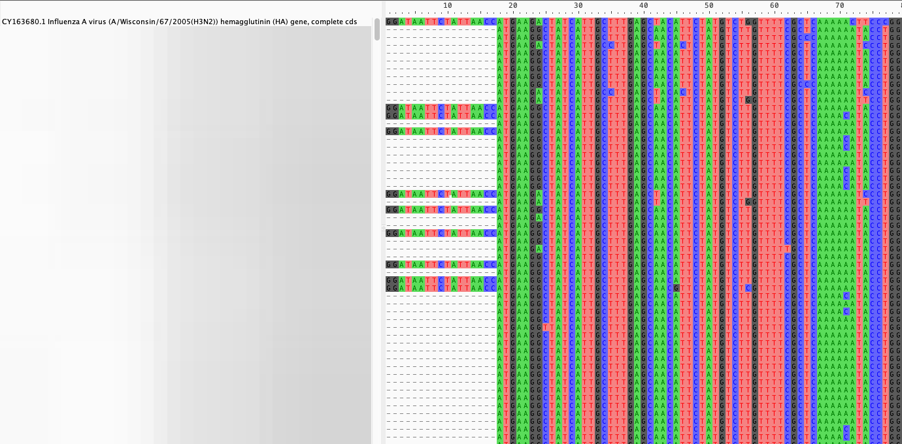
Examples of MSA software:
Assuming nucleotide sequence data as input:
Distance Based:
Character Based:
Nextstrain is an open source toolkit for analyzing and visualizing pathogen genomic data.
The two core parts of Nextstrain are:
flowchart TB
subgraph Inputs
direction LR
A[sequences.fasta]
B[metadata.tsv]
end
subgraph Augur
direction LR
C(filter)
D(align)
E(tree)
F(refine)
G(export)
C --> D
D --> E
E --> F
F --> G
end
Inputs --> Augur
Augur --> H[Build Dataset]
H --> I[Auspice]
%% Styling
classDef input fill:#ffffff,stroke:#555,rx:12,ry:12;
classDef step fill:#bfe3ff,stroke:#3b82c4,rx:14,ry:14;
classDef output fill:#ffffff,stroke:#555,rx:12,ry:12;
classDef final fill:#b9f5b0,stroke:#2e7d32,rx:14,ry:14;
class A,B input;
class C,D,E,F,G step;
class H output;
class I final;
Click on the following link which will direct you to the exercise we will be going through together.
{kind=link}